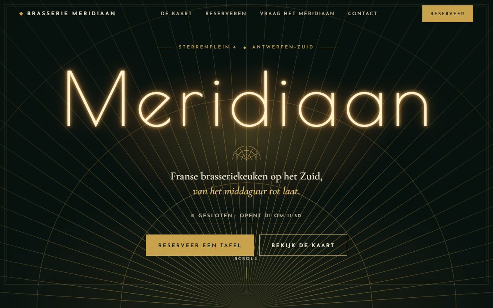
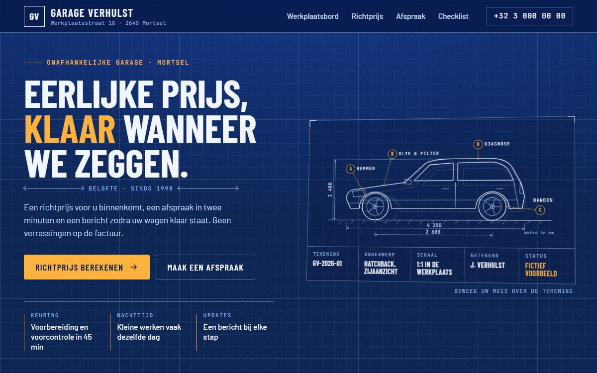
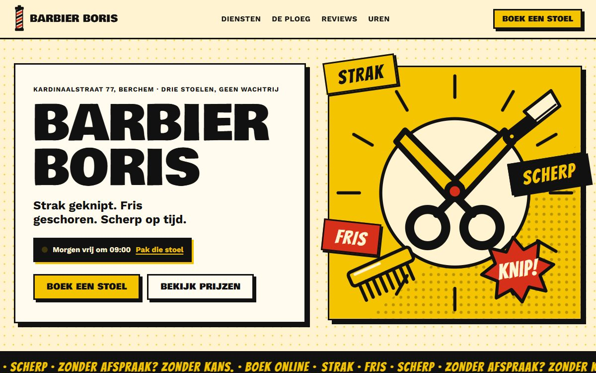
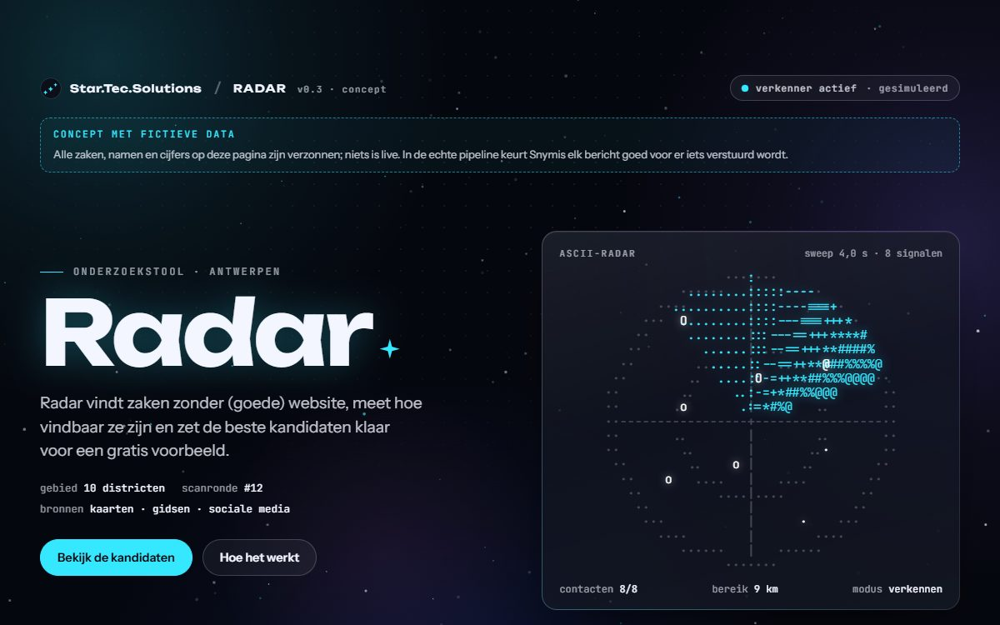

Demo's
Vier zaken. Vier stijlen. Nul sjablonen.
Elke demo is een fictieve zaak uit de buurt, volledig door ons gebouwd: eigen ontwerp, eigen interacties, eigen animaties. Niets komt uit een sjabloon. Klik, scroll en probeer de knoppen; alles werkt, ook op je gsm.
- Particles
- Liquid morph
- Holographic
- Neon glow
- Wireframe 3D
- Glassmorphism
- Kinetic type
- ASCII art
- Gradient mesh
- Split-flap
- Blueprint
- Halftone
- Art deco
- Comic book
- Neo-brutalism

Brasserie MeridiaanBrasserie in Antwerpen-Zuid Live open-of-gesloten, een kaart met filters, een reservatie-aanvraag en een gescripte WhatsApp-assistent die antwoordt met de echte uren van de zaak. Open de demo
Garage VerhulstGarage in Mortsel Een werkplaatsbord dat elke klant volgt, een richtprijs-calculator, afspraak-aanvraag en een keuringschecklist, op blauwdrukpapier. Open de demo
Barbier BorisBarbier in Berchem Boeken in vier stappen, reviews als tekstballonnen, een voor-en-na-slider en een ploeg met karakter. Luid, maar leesbaar. Open de demo
RadarOnze eigen onderzoekstool (concept) Hoe we zaken zonder goede website vinden, meten en klaarzetten voor een gratis voorbeeld. Met fictieve data, echte werking. Open de demo
Wat je in elke demo vindt
Echte interacties, geen plaatjes.
- Boeken, reserveren of een richtprijs berekenen, meteen in de pagina.
- Werkt op je gsm en op een groot scherm, zonder cookies of trackers.
- Fictieve namen, prijzen en adressen; de techniek erachter is echt.
- Geen sjabloon: elke zaak krijgt een stijl die bij haar past.
Jouw zaak
Jouw zaak als vijfde demo?
We bouwen eerst een gratis voorbeeld met jouw echte gegevens. Daarna beslis jij; elke offerte is op maat.